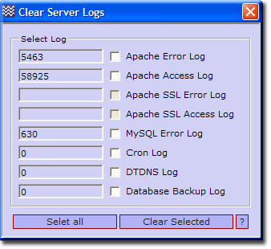

General - Clear Logs
Log files are an important resource when developing or debugging applications.
Over time, log files can become very large. Generally there is no need to keep these.
When running servers from a USB memory stick, freeing up space is essential.
This menu allows you to delete all or just certain log files.
Clear server log files
UniController: Server Configuration > General > Clear Server log files
|
Clear a Single Log file
- Select the log file to delete (Tick check box).
- Click Clear Selected button.
Clear All log files
- Click Select All button.
- Click Clear Selected button.
Note 1: The current file size is displayed.
Note 2: Greyed out buttons are unavailable because either the file does not
exist or the associated servers are running.
Note 3: To clear Apache and MySQL logs, you must first stop the servers.
|

|
Files modified
Depending on what is selected, the following files are modified:
- UniServer\usr\local\apache2\logserror.log
- UniServer\usr\local\apache2\logs\access.log
- UniServer\usr\local\apache2\logs\error_ssl.log
- UniServer\usr\local\apache2\logs\access_ssl.log
- UniServer\usr\local\mysql\data\mysql.err
- UniServer\uni_con\cron\cron.log
- UniServer\uni_con\dtdns_updater\dtdns.log
- UniServer\uni_con\db_backup\db_backup.log
|